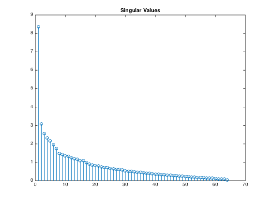

Contents
clear; close all;
term_by_doc;
Part A
for i = 1:n
Ahat(:,i) = A(:,i)/norm(A(:,i));
end
[U,S,V] = svd(Ahat);
svalues = diag(S,0);
stem(svalues);
title('Singular Values');

Part B
q = zeros(64,1);
q(53) = 1;
results = Ahat'*q;
top = sort(results,'descend');
for i = 1:5
top5(i) = find(results == top(i));
end
disp(['The top 5 results with query for the word students are: ' ...
num2str(top5(1)) ', ' num2str(top5(2)) ', ' num2str(top5(3)) ', ' ...
num2str(top5(4)) ', ' num2str(top5(5)) '.']);
The top 5 results with query for the word students are: 106, 105, 107, 115, 111.
Part C
A8 = U(:,1:32)*S(1:32,1:32)*V(:,1:32)';
results = A8'*q;
top = sort(results,'descend');
for i = 1:5
top5_32(i) = find(results == top(i));
end
disp(['RANK 32: The top 5 results with query for the word students are: ' ...
num2str(top5_32(1)) ', ' num2str(top5_32(2)) ', ' num2str(top5_32(3)) ', ' ...
num2str(top5_32(4)) ', ' num2str(top5_32(5)) '.']);
A16 = U(:,1:16)*S(1:16,1:16)*V(:,1:16)';
results = A16'*q;
top = sort(results,'descend');
for i = 1:5
top5_16(i) = find(results == top(i));
end
disp(['RANK 16: The top 5 results with query for the word students are: ' ...
num2str(top5_16(1)) ', ' num2str(top5_16(2)) ', ' num2str(top5_16(3)) ', ' ...
num2str(top5_16(4)) ', ' num2str(top5_16(5)) '.']);
A8 = U(:,1:8)*S(1:8,1:8)*V(:,1:8)';
results = A8'*q;
top = sort(results,'descend');
for i = 1:5
top5_8(i) = find(results == top(i));
end
disp(['RANK 8: The top 5 results with query for the word students are: ' ...
num2str(top5_8(1)) ', ' num2str(top5_8(2)) ', ' num2str(top5_8(3)) ', ' ...
num2str(top5_8(4)) ', ' num2str(top5_8(5)) '.']);
A4 = U(:,1:4)*S(1:4,1:4)*V(:,1:4)';
results = A4'*q;
top = sort(results,'descend');
for i = 1:5
top5_4(i) = find(results == top(i));
end
disp(['RANK 4: The top 5 results with query for the word students are: ' ...
num2str(top5_4(1)) ', ' num2str(top5_4(2)) ', ' num2str(top5_4(3)) ', ' ...
num2str(top5_4(4)) ', ' num2str(top5_4(5)) '.']);
RANK 32: The top 5 results with query for the word students are: 106, 105, 107, 115, 111.
RANK 16: The top 5 results with query for the word students are: 106, 107, 105, 115, 111.
RANK 8: The top 5 results with query for the word students are: 115, 106, 120, 107, 111.
RANK 4: The top 5 results with query for the word students are: 115, 105, 107, 66, 63.
Part D